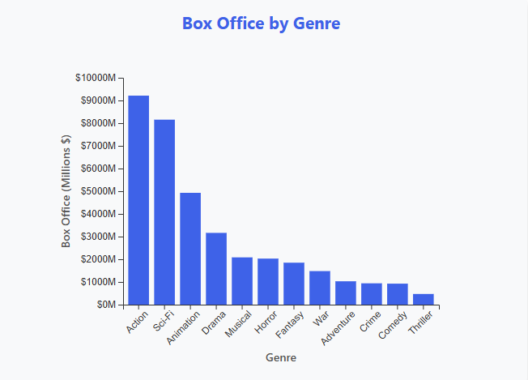
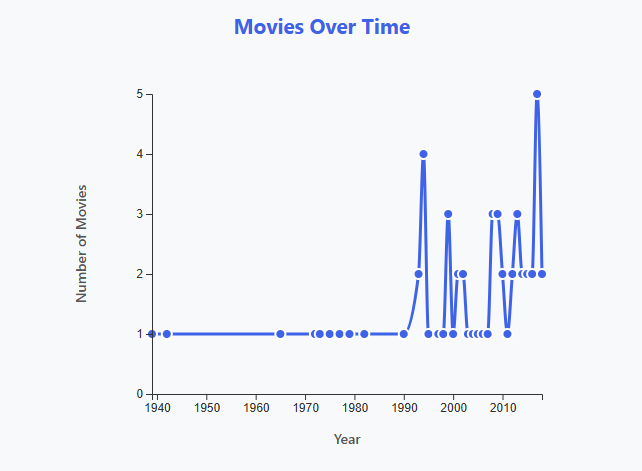
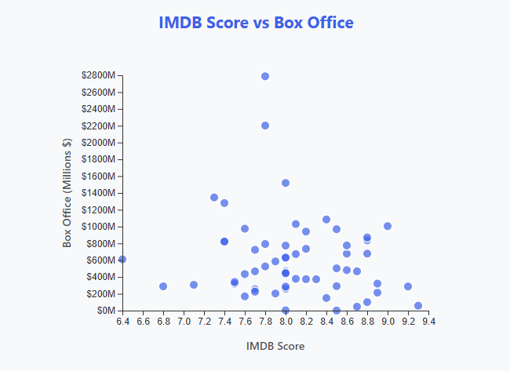

Movie Data Visualization - Project Documentation
1. Design Process
1.1 Initial Questions
Before starting the visualization, I asked myself several questions about the movie dataset:
- Which genres generate the most box office revenue?
- How has the number of movies changed over time?
- Is there a relationship between IMDB scores and box office performance?
- What are the top-grossing movies in the dataset?
- How do different ratings (G, PG, PG-13, R) compare in terms of box office?
1.2 Initial Sketches and Design Ideas
I started by sketching out different visualization ideas on paper. Here's what I considered:
Initial Design Concepts:
- Bar Chart for Genres: I wanted to show total box office by genre using vertical bars. This makes it easy to compare different genres at a glance.
- Line Chart for Timeline: A line chart showing the number of movies released each year would help identify trends over time.
- Scatter Plot: To explore the relationship between IMDB scores and box office, a scatter plot seemed ideal. Each point represents a movie.
- Top Movies Chart: A horizontal bar chart would clearly show the top 10 movies by box office, with movie names readable on the y-axis.
1.3 Iterative Design Process
During development, I made several iterations:
- First iteration: Basic charts without interactivity - just static visualizations
- Second iteration: Added hover tooltips to show detailed information
- Third iteration: Added click interactions to display movie details in an info panel
- Fourth iteration: Added filter controls (genre, rating, year) to allow users to explore subsets of data
- Final iteration: Improved styling, added responsive design, and polished the user experience
1.4 Challenges and Solutions
Some challenges I encountered:
- Data parsing: Initially had issues with CSV parsing. Solved by using D3's built-in CSV parser and proper data type conversion.
- Scales and domains: Learning to set up proper scales for different data types (categorical vs. numerical) required practice.
- Interactivity: Implementing tooltips and click events took time to get right, especially positioning tooltips correctly.
- Filtering: Making filters work together and update all charts simultaneously required careful state management.
2. Rationale of Design Choices
2.1 Chart Type Selection
Bar Chart for Genres
Why: Bar charts are excellent for comparing categorical data. Since genres are discrete categories, a bar chart allows easy comparison of box office totals across different genres. I chose vertical bars because genre names are relatively short and fit well on the x-axis.
Encoding: Genre (categorical) → x-axis position, Box Office (quantitative) → bar height (y-axis)
Line Chart for Timeline
Why: Line charts are ideal for showing trends over time. The continuous nature of time makes a line chart more appropriate than bars, as it emphasizes the flow and trends in movie releases over the years.
Encoding: Year (temporal) → x-axis position, Count (quantitative) → y-axis position
Scatter Plot for IMDB Score vs Box Office
Why: Scatter plots are perfect for exploring relationships between two quantitative variables. This allows users to see if there's a correlation between critical acclaim (IMDB score) and commercial success (box office).
Encoding: IMDB Score (quantitative) → x-axis position, Box Office (quantitative) → y-axis position
Horizontal Bar Chart for Top Movies
Why: Horizontal bars work well when you have long text labels (movie names). This orientation makes movie names readable without rotation, and the horizontal layout naturally suggests ranking from top to bottom.
Encoding: Movie Name (categorical) → y-axis position, Box Office (quantitative) → bar length (x-axis)
2.2 Color Choices
Primary Color (#2563eb): I chose a vibrant blue color as the primary color for all charts. This color:
- Is visually appealing and modern
- Has good contrast against white backgrounds
- Is accessible (not problematic for colorblind users in this context)
- Creates visual consistency across all visualizations
Hover Color (#1e40af): A darker blue for hover states provides clear visual feedback when users interact with elements.
Why not use different colors for different categories? Since each chart focuses on a single dimension, using a single color scheme keeps the visualization clean and avoids unnecessary complexity. Color is reserved for highlighting and interaction feedback.
2.3 Layout and Arrangement
Grid Layout: I arranged charts in a responsive grid (2x2 on larger screens, 1 column on mobile). This allows users to see multiple visualizations simultaneously, facilitating comparison and exploration.
Filter Placement: Filters are placed at the top, making them immediately visible and accessible. This follows the common pattern of "controls at the top, content below."
Info Panel: The movie information panel appears at the bottom, providing details when users click on data points. This keeps the main visualization area uncluttered while providing detailed information on demand.
2.4 Interactivity Design
Tooltips: Hover tooltips provide quick access to detailed information without cluttering the visualization. They appear near the cursor and disappear when the user moves away.
Click Interactions: Clicking on data points (especially in the scatter plot and top movies chart) shows detailed information in the info panel. This provides a way to "drill down" into specific movies.
Filters: Interactive filters allow users to explore subsets of data. All charts update simultaneously, maintaining consistency and allowing users to see how different filters affect all visualizations at once.
2.5 Typography and Labels
Axis Labels: All charts include clear axis labels with units (e.g., "Box Office (Millions $)"). This is crucial for understanding what the data represents.
Chart Titles: Each chart has a descriptive title that clearly states what it shows.
Font Sizes: I used readable font sizes (12-14px for axes, larger for titles) to ensure accessibility.
3. Discoveries and Findings
Using the visualization, I discovered several interesting facts about the movie dataset:
3.1 Genre Analysis
Finding: Action and Sci-Fi genres tend to have the highest total box office revenue in this dataset. This makes sense as these genres often have larger budgets and appeal to broad audiences. Animation also performs well, likely due to family-friendly appeal.
Evidence: When viewing the bar chart, you can see that Action and Sci-Fi genres have the tallest bars, indicating higher total box office.
3.2 Temporal Trends
What This Chart Shows: The "Movies Over Time" line chart displays how many movies from the dataset were released in each year. The x-axis shows the years (ranging from the earliest movie in the dataset to the latest), and the y-axis shows the count of movies released in that year. The blue line connects all the data points, making it easy to see trends over time.
Finding: The dataset shows movies spanning from the 1940s to 2010s, with varying numbers of movies per year. The line chart reveals periods with more or fewer movies in the dataset, which helps identify which years are well-represented in the data.
Evidence: The line chart shows peaks and valleys in the number of movies per year. For example, you might see a spike in certain years (like 2014) where multiple movies from the dataset were released, or years with only one movie. This pattern may reflect the selection criteria of the dataset or actual trends in movie production during those periods.
How to Read It: Each point on the line represents a year, and the height of that point shows how many movies from the dataset were released in that year. Hovering over any point will show you the exact year and count. A rising line indicates more movies in later years, while a flat or declining line suggests fewer movies in those periods.
3.3 IMDB Score vs Box Office Relationship
Finding: There is a weak positive correlation between IMDB scores and box office performance. However, some movies with very high IMDB scores (above 9.0) don't necessarily have the highest box office, suggesting that critical acclaim doesn't always translate to commercial success.
Evidence: In the scatter plot, you can see movies like "The Shawshank Redemption" (IMDB: 9.3) with relatively lower box office compared to blockbusters like "Avatar" (IMDB: 7.8) with much higher box office.
Interesting Observation: Some of the highest-grossing movies have IMDB scores in the 7-8 range, showing that commercial success and critical acclaim don't always align.
3.4 Top Performers

Finding: "Avatar" ($2,787.9M) and "Titanic" ($2,201.6M) dominate the box office rankings, both directed by James Cameron. These movies significantly outperformed others in the dataset, with Avatar being the highest-grossing movie and Titanic ranking second.
Evidence: The horizontal bar chart clearly shows these two movies with much longer bars than others, indicating their exceptional box office performance. Avatar's box office of nearly $2.8 billion is over $500 million more than the third-place movie (The Avengers at $1,518.8M), demonstrating its dominance.
4. Video Demonstration
Below is a 2-4 minute video demonstrating the interactive visualization with narration explaining its features and findings:
5. Technical Implementation
5.1 Data Structure
The dataset contains 60 movies with the following attributes:
- Name: Movie title
- Year: Release year
- Genre: Movie genre (Action, Sci-Fi, Drama, etc.)
- Rating: MPAA rating (G, PG, PG-13, R)
- BoxOffice: Total box office revenue in millions
- Budget: Production budget in millions
- Director: Director name
- Country: Country of production
- Runtime: Movie length in minutes
- IMDB_Score: IMDB rating (0-10 scale)
5.2 Code Structure
The project is organized into several files:
- index.html: Main HTML structure
- css/style.css: Styling and layout
- js/dataLoader.js: Data loading and processing
- js/visualizations.js: D3 chart creation functions
- js/main.js: Application initialization and event handling
- data/movie_data.csv: Dataset file
5.3 Key D3 Concepts Used
- Selections: Using d3.select() and d3.selectAll() to manipulate DOM elements
- Scales: scaleBand(), scaleLinear() for mapping data to visual space
- Axes: axisBottom(), axisLeft() for creating chart axes
- Data Binding: Using .data(), .enter(), .append() pattern
- Transitions: For smooth animations on hover
- Data Aggregation: Using d3.rollup() to group and aggregate data
6. Conclusion
This project provided valuable hands-on experience with D3.js and data visualization principles. Through iterative design and implementation, I created an interactive visualization that allows users to explore movie data from multiple perspectives.
Key Learnings:
- Understanding when to use different chart types
- Implementing interactivity to enhance exploration
- Designing for clarity and usability
- Iterative improvement based on testing and feedback
Future Improvements:
- Add more advanced filtering options (e.g., by director, country)
- Implement brushing and linking between charts
- Add animation when filters change
- Include more detailed statistics and insights
- Make the visualization more responsive for mobile devices